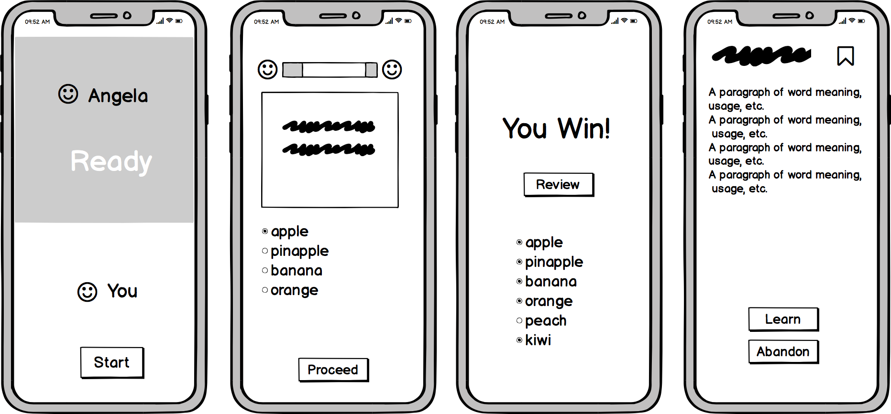
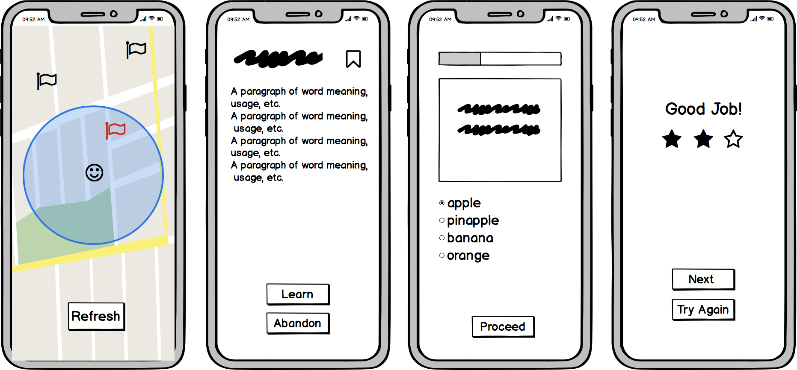

J-Walk
Design an educational game to motivate language learning.
Learning a language is difficult, and a primary challenge is sustaining enough motivation to become proficient. Multiple theoretical perspectives point to the importance of context in language learning. Recently, we have seen tools that use smartphones to teach contextually relevant words based on the learner’s physical location. However, there is still room for improvement in terms of making contextual language learning as fun as possible.
J-Walk is an educational game based on real-time location to create an engaging language learning experience.
The user can wander around and pick up “words” that are generated from a real world context. In addition, the user can use these collected words to review the words to memorize them and level up or solve language challenges embedded in the same world.
Getting Started
Understanding the problem
"Though I am very interested in Japanese, I have never kept learning vocabulary on app for more than a week..."
Being multi-lingual speakers and passionate language learners, we noticed
the phenomena where it is always difficult for beginners to persist on learning new languages,
especially when they are no longer taking language classes and try self-teaching on online platform or mobile app instead.
What is the reason behind? Considering the adequate amount of resources, language learning apps were once believed by experts that they
could provide fruitful and efficient learning experience no less than professional institutions. However, most users of these applications have
reported one common problem in their uninstallation feedback - we are lacking motivation.
By talking with self-taught language learners and exploring the available apps on the market, I realized that users are lacking motivations because of the following reasons:
1. Tedious learning experience
2. No/weak reward system, no sense of accomplishment
3. Feeling of isolation from peer learners
The Goal/Objective
To enrich learning experience on mobile app by providing strong incentive and interactive study environment.
To achieve our goal, we are looking for answers to the following questions:
(1) How could we add additional incentive to the users?
(2) How could we get people to feel connected with other users?
(3) How could we make the learning experience more interesting?
(3) How could we increase user's dependency on the app?
User Research
Understanding the users
Before we start exploring potential solutions, it is essential to learn about our potential users, therefore we conducted user interviews with individuals who had experience engaging with language learning mobile apps, asking for their experience, opinions and expectation about language learning product. To be more specific, our objective is to:
(1) Learn about users’ need and experience with the app
(2) Uncover pain points behind lack of motivation
(3) Discover potential product opportunities

Affinity Diagram
After the interview, we went through the interview notes and sorted the result into categories using affinity diagram. From our observation of the diagram, we noticed users are severely bothered by:
Endlessly accumulating and repetitive study tasks
Over-frequent notifications
Un-personalized study content
While it is easier for users with clear target (exam, diploma test) to persist, users who learn out of flexible demand (travel, interest) requires more interesting learning option and better sharing experience.


Brainstorming and Ideation
Solution Exploration
During brainstorming session with the entire team, we decided on taking inspiration from video/mobile games, a process coined as "gamification". There are two reasons why we consider gamification as a potential solution:
1. The affinity diagram shows users are desiring for more interesting feature and more variety in tasks.
2. There is large overlap between language learners and game players, as teenagers and young adults playing an important role.
It is therefore feasible that mapping game design elements from onto a non-game context like language learning might yield favorable results.
Solution 1: Challenge with AI or Friends
Users challenge AI or friends who are using this app, earn score or rewards after winning each combat.
Solution 2: Collecting Words On Map
Users collect and learn items linked to new words on map, they have to collect all the words in one map and pass the test in order to proceed to the next level (map). Their performance is measured by 1-3 stars based on correctness. Multiple attempts are allowed.
Solution 3: Pet Nursing
Users nurse a pet and learn new words to feed the pet.